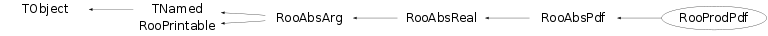

class RooProdPdf: public RooAbsPdf
RooProdPdf is an efficient implementation of a product of PDFs of the form PDF_1 * PDF_2 * ... * PDF_N PDFs may share observables. If that is the case any irreducable subset of PDFS that share observables will be normalized with explicit numeric integration as any built-in normalization will no longer be valid. Alternatively, products using conditional PDFs can be defined, e.g. F(x|y) * G(y) meaning a pdf F(x) _given_ y and a PDF G(y). In this contruction F is only normalized w.r.t x and G is normalized w.r.t y. The product in this construction is properly normalized. If exactly one of the component PDFs supports extended likelihood fits, the product will also be usable in extended mode, returning the number of expected events from the extendable component PDF. The extendable component does not have to appear in any specific place in the list.
Function Members (Methods)
public:
protected:
Data Members
public:
| enum RooAbsPdf::ExtendMode { | CanNotBeExtended | |
| CanBeExtended | ||
| MustBeExtended | ||
| }; | ||
| enum RooAbsReal::ScaleType { | Raw | |
| Relative | ||
| NumEvent | ||
| RelativeExpected | ||
| }; | ||
| enum RooAbsReal::ErrorLoggingMode { | PrintErrors | |
| CollectErrors | ||
| CountErrors | ||
| Ignore | ||
| }; | ||
| enum RooAbsArg::ConstOpCode { | Activate | |
| DeActivate | ||
| ConfigChange | ||
| ValueChange | ||
| }; | ||
| enum RooAbsArg::OperMode { | Auto | |
| AClean | ||
| ADirty | ||
| }; | ||
| enum TObject::EStatusBits { | kCanDelete | |
| kMustCleanup | ||
| kObjInCanvas | ||
| kIsReferenced | ||
| kHasUUID | ||
| kCannotPick | ||
| kNoContextMenu | ||
| kInvalidObject | ||
| }; | ||
| enum TObject::[unnamed] { | kIsOnHeap | |
| kNotDeleted | ||
| kZombie | ||
| kBitMask | ||
| kSingleKey | ||
| kOverwrite | ||
| kWriteDelete | ||
| }; | ||
| enum RooPrintable::ContentsOption { | kName | |
| kClassName | ||
| kValue | ||
| kArgs | ||
| kExtras | ||
| kAddress | ||
| kTitle | ||
| kCollectionHeader | ||
| }; | ||
| enum RooPrintable::StyleOption { | kInline | |
| kSingleLine | ||
| kStandard | ||
| kVerbose | ||
| kTreeStructure | ||
| }; |
protected:
| set<std::string> | RooAbsArg::_boolAttrib | Boolean attributes |
| set<std::string> | RooAbsArg::_boolAttribTransient | ! Transient boolean attributes (not copied in ctor) |
| UChar_t | RooAbsReal::_byteValue | ! Transient cache for byte values from tree branches |
| static Bool_t | RooAbsReal::_cacheCheck | If true, always validate contents of clean which outcome of evaluate() |
| deque<RooAbsCache*> | RooAbsArg::_cacheList | list of caches |
| RooObjCacheManager | _cacheMgr | The cache manager |
| RooRefCountList | RooAbsArg::_clientList | list of client objects |
| RooRefCountList | RooAbsArg::_clientListShape | subset of clients that requested shape dirty flag propagation |
| RooRefCountList | RooAbsArg::_clientListValue | subset of clients that requested value dirty flag propagation |
| TIterator* | RooAbsArg::_clientShapeIter | ! Iterator over _clientListShape |
| TIterator* | RooAbsArg::_clientValueIter | ! Iterator over _clientListValue |
| RooArgSet* | _curNormSet | ! |
| Double_t | _cutOff | Cutoff parameter for running product |
| RooArgSet | _defNormSet | Default normalization set |
| Bool_t | RooAbsArg::_deleteWatch | ! Delete watch flag |
| RooExpensiveObjectCache* | RooAbsArg::_eocache | Pointer to global cache manager for any expensive components created by this object |
| Int_t | RooAbsPdf::_errorCount | Number of errors remaining to print |
| static Bool_t | RooAbsPdf::_evalError | |
| Int_t | _extendedIndex | Index of extended PDF (if any) |
| Bool_t | RooAbsArg::_fast | Allow fast access mode in getVal() and proxies |
| Float_t | RooAbsReal::_floatValue | ! Transient cache for floating point values from tree branches |
| Bool_t | RooAbsReal::_forceNumInt | Force numerical integration if flag set |
| RooAICRegistry | _genCode | ! Registry of composite direct generator codes |
| static Bool_t | RooAbsReal::_globalSelectComp | Global activation switch for component selection |
| static Bool_t | RooAbsArg::_inhibitDirty | Static flag controlling global inhibit of dirty state propagation |
| Int_t | RooAbsReal::_intValue | ! Transient cache for integer values from tree branches |
| TString | RooAbsReal::_label | Plot label for objects value |
| RooArgSet* | RooAbsReal::_lastNSet | ! |
| Int_t | RooAbsPdf::_minDimNormValueCache | Minimum number of numerically integrated dimensions to activate normalization value caching |
| static Int_t | RooPrintable::_nameLength | |
| TNamed* | RooAbsArg::_namePtr | ! Do not persist. Pointer to global instance of string that matches object named |
| Int_t | RooAbsPdf::_negCount | Number of negative probablities remaining to print |
| RooAbsReal* | RooAbsPdf::_norm | ! Normalization integral (owned by _normMgr) |
| RooObjCacheManager | RooAbsPdf::_normMgr | The cache manager |
| TString | RooAbsPdf::_normRange | Normalization range |
| static TString | RooAbsPdf::_normRangeOverride | |
| RooArgSet* | RooAbsPdf::_normSet | ! Normalization set with for above integral |
| RooAbsArg::OperMode | RooAbsArg::_operMode | Dirty state propagation mode |
| RooArgSet* | RooAbsArg::_ownedComponents | ! Set of owned component |
| TIterator* | _pdfIter | ! Iterator of PDF list |
| RooListProxy | _pdfList | List of PDF components |
| RooLinkedList | _pdfNSetList | List of PDF component normalization sets |
| Int_t | RooAbsReal::_plotBins | Number of plot bins |
| Double_t | RooAbsReal::_plotMax | Maximum of plot range |
| Double_t | RooAbsReal::_plotMin | Minimum of plot range |
| Bool_t | RooAbsArg::_prohibitServerRedirect | ! Prohibit server redirects -- Debugging tool |
| TRefArray | RooAbsArg::_proxyList | list of proxies |
| Double_t | RooAbsPdf::_rawValue | |
| TNamed* | _refRangeName | Reference range name for interpretation of conditional products |
| Char_t | RooAbsReal::_sbyteValue | ! Transient cache for signed byte values from tree branches |
| Bool_t | RooAbsPdf::_selectComp | Component selection flag for RooAbsPdf::plotCompOn |
| Bool_t | RooAbsReal::_selectComp | ! Component selection flag for RooAbsPdf::plotCompOn |
| Bool_t | _selfNorm | Is self-normalized |
| RooRefCountList | RooAbsArg::_serverList | list of server objects |
| Bool_t | RooAbsArg::_shapeDirty | Flag set if value needs recalculating because input shapes modified |
| RooNumGenConfig* | RooAbsPdf::_specGeneratorConfig | ! MC generator configuration specific for this object |
| RooNumIntConfig* | RooAbsReal::_specIntegratorConfig | Numeric integrator configuration specific for this object |
| map<std::string,std::string> | RooAbsArg::_stringAttrib | String attributes |
| Int_t | RooAbsPdf::_traceCount | Number of traces remaining to print |
| Bool_t | RooAbsReal::_treeVar | !do not persist |
| UInt_t | RooAbsReal::_uintValue | ! Transient cache for unsigned integer values from tree branches |
| TString | RooAbsReal::_unit | Unit for objects value |
| Bool_t | _useDefaultGen | Use default or distributed event generator |
| Double_t | RooAbsReal::_value | Cache for current value of object |
| Int_t | RooAbsPdf::_valueCacheIntOrder | Interpolation order for numeric integral value cache |
| Bool_t | RooAbsArg::_valueDirty | Flag set if value needs recalculating because input values modified |
| static Bool_t | RooAbsArg::_verboseDirty | Static flag controlling verbose messaging for dirty state changes |
| static Int_t | RooAbsPdf::_verboseEval | |
| TString | TNamed::fName | object identifier |
| TString | TNamed::fTitle | object title |
Class Charts
{kind=link}
{kind=link}
{kind=link}
{kind=link}

Function documentation
RooProdPdf(const char* name, const char* title, RooAbsPdf& pdf1, RooAbsPdf& pdf2, Double_t cutOff = 0)
Constructor with 2 PDFs (most frequent use case). The optional cutOff parameter can be used as a speed optimization if one or more of the PDF have sizable regions with very small values, which would pull the entire product of PDFs to zero in those regions. After each PDF multiplication, the running product is compared with the cutOff parameter. If the running product is smaller than the cutOff value, the product series is terminated and remaining PDFs are not evaluated. There is no magic value of the cutOff, the user should experiment to find the appropriate balance between speed and precision. If a cutoff is specified, the PDFs most likely to be small should be put first in the product. The default cutOff value is zero.
RooProdPdf(const char* name, const char* title, const RooArgList& pdfList, Double_t cutOff = 0)
Constructor from a list of PDFs The optional cutOff parameter can be used as a speed optimization if one or more of the PDF have sizable regions with very small values, which would pull the entire product of PDFs to zero in those regions. After each PDF multiplication, the running product is compared with the cutOff parameter. If the running product is smaller than the cutOff value, the product series is terminated and remaining PDFs are not evaluated. There is no magic value of the cutOff, the user should experiment to find the appropriate balance between speed and precision. If a cutoff is specified, the PDFs most likely to be small should be put first in the product. The default cutOff value is zero.
RooProdPdf(const char* name, const char* title, const RooArgSet& fullPdfSet, const RooCmdArg& arg1, const RooCmdArg& arg2 = RooCmdArg(), const RooCmdArg& arg3 = RooCmdArg(), const RooCmdArg& arg4 = RooCmdArg(), const RooCmdArg& arg5 = RooCmdArg(), const RooCmdArg& arg6 = RooCmdArg(), const RooCmdArg& arg7 = RooCmdArg(), const RooCmdArg& arg8 = RooCmdArg())
Constructor from named argument list
fullPdf -- Set of 'regular' PDFS that are normalized over all their observables
Conditional(pdfSet,depSet) -- Add PDF to product with condition that it
only be normalized over specified observables
any remaining observables will be conditional
observables
For example, given a PDF F(x,y) and G(y)
RooProdPdf("P","P",G,Conditional(F,x)) will construct a 2-dimensional PDF as follows:
P(x,y) = G(y)/Int[y]G(y) * F(x,y)/Int[x]G(x,y)
which is a well normalized and properly defined PDF, but different from the
P'(x,y) = F(x,y)*G(y) / Int[x,y] F(x,y)*G(y)
In the former case the y distribution of P is identical to that of G, while
F only is used to determine the correlation between X and Y. In the latter
case the Y distribution is defined by the product of F and G.
This P(x,y) construction is analoguous to generating events from F(x,y) with
a prototype dataset sampled from G(y)
RooProdPdf(const char* name, const char* title, const RooCmdArg& arg1, const RooCmdArg& arg2 = RooCmdArg(), const RooCmdArg& arg3 = RooCmdArg(), const RooCmdArg& arg4 = RooCmdArg(), const RooCmdArg& arg5 = RooCmdArg(), const RooCmdArg& arg6 = RooCmdArg(), const RooCmdArg& arg7 = RooCmdArg(), const RooCmdArg& arg8 = RooCmdArg())
Constructor from named argument list
fullPdf -- Set of 'regular' PDFS that are normalized over all their observables
Conditional(pdfSet,depSet) -- Add PDF to product with condition that it
only be normalized over specified observables
any remaining observables will be conditional
observables
For example, given a PDF F(x,y) and G(y)
RooProdPdf("P","P",G,Conditional(F,x)) will construct a 2-dimensional PDF as follows:
P(x,y) = G(y)/Int[y]G(y) * F(x,y)/Int[x]G(x,y)
which is a well normalized and properly defined PDF, but different from the
P'(x,y) = F(x,y)*G(y) / Int[x,y] F(x,y)*G(y)
In the former case the y distribution of P is identical to that of G, while
F only is used to determine the correlation between X and Y. In the latter
case the Y distribution is defined by the product of F and G.
This P(x,y) construction is analoguous to generating events from F(x,y) with
a prototype dataset sampled from G(y)
RooProdPdf(const char* name, const char* title, const RooArgSet& fullPdfSet, const RooLinkedList& cmdArgList)
Internal constructor from list of named arguments
void initializeFromCmdArgList(const RooArgSet& fullPdfSet, const RooLinkedList& l)
Initialize RooProdPdf configuration from given list of RooCmdArg configuration arguments and set of 'regular' p.d.f.s in product
Double_t calculate(const RooArgList* partIntList, const RooLinkedList* normSetList) const
Calculate running product of pdfs terms, using the supplied normalization set in 'normSetList' for each component
Double_t calculate(const RooProdPdf::CacheElem& cache, Bool_t verbose = kFALSE) const
Calculate running product of pdfs terms, using the supplied normalization set in 'normSetList' for each component
void factorizeProduct(const RooArgSet& normSet, const RooArgSet& intSet, RooLinkedList& termList, RooLinkedList& normList, RooLinkedList& impDepList, RooLinkedList& crossDepList, RooLinkedList& intList) const
Factorize product in irreducible terms for given choice of integration/normalization
void getPartIntList(const RooArgSet* nset, const RooArgSet* iset, RooArgList*& partList, RooLinkedList*& nsetList, Int_t& code, const char* isetRangeName = 0) const
Return list of (partial) integrals of product terms for integration of p.d.f over observables iset while normalization over observables nset. Also return list of normalization sets to be used to evaluate each component in the list correctly.
RooAbsReal* makeCondPdfRatioCorr(RooAbsReal& term, const RooArgSet& termNset, const RooArgSet& termImpSet, const char* normRange, const char* refRange) const
For single normalization ranges
void rearrangeProduct(RooProdPdf::CacheElem& ) const
RooAbsReal* specializeRatio(RooFormulaVar& input, const char* targetRangeName) const
RooAbsReal* specializeIntegral(RooAbsReal& orig, const char* targetRangeName) const
void groupProductTerms(RooLinkedList& groupedTerms, RooArgSet& outerIntDeps, const RooLinkedList& terms, const RooLinkedList& norms, const RooLinkedList& imps, const RooLinkedList& ints, const RooLinkedList& cross) const
Group product into terms that can be calculated independently
std::vector<RooAbsReal*> processProductTerm(const RooArgSet* nset, const RooArgSet* iset, const char* isetRangeName, const RooArgSet* term, const RooArgSet& termNSet, const RooArgSet& termISet, Bool_t& isOwned, Bool_t forceWrap = kFALSE) const
Calculate integrals of factorized product terms over observables iset while normalized to observables in nset.
const char* makeRGPPName(const char* pfx, const RooArgSet& term, const RooArgSet& iset, const RooArgSet& nset, const char* isetRangeName) const
Make an appropriate automatic name for a RooGenProdProj object in getPartIntList()
Bool_t forceAnalyticalInt(const RooAbsArg& dep) const
Force RooRealIntegral to offer all observables for internal integration
Int_t getAnalyticalIntegralWN(RooArgSet& allVars, RooArgSet& numVars, const RooArgSet* normSet, const char* rangeName = 0) const
Determine which part (if any) of given integral can be performed analytically. If any analytical integration is possible, return integration scenario code. RooProdPdf implements two strategies in implementing analytical integrals First, PDF components whose entire set of dependents are requested to be integrated can be dropped from the product, as they will integrate out to 1 by construction Second, RooProdPdf queries each remaining component PDF for its analytical integration capability of the requested set ('allVars'). It finds the largest common set of variables that can be integrated by all remaining components. If such a set exists, it reconfirms that each component is capable of analytically integrating the common set, and combines the components individual integration codes into a single integration code valid for RooProdPdf.
Double_t analyticalIntegralWN(Int_t code, const RooArgSet* normSet, const char* rangeName = 0) const
Return analytical integral defined by given scenario code
RooAbsPdf::ExtendMode extendMode() const
If this product contains exactly one extendable p.d.f return the extension abilities of that p.d.f, otherwise return CanNotBeExtended
Double_t expectedEvents(const RooArgSet* nset) const
Return the expected number of events associated with the extentable input p.d.f in the product. If there is no extendable term, return zero and issue and error
RooAbsGenContext* genContext(const RooArgSet& vars, const RooDataSet* prototype = 0, const RooArgSet* auxProto = 0, Bool_t verbose = kFALSE) const
Return generator context optimized for generating events from product p.d.f.s
Int_t getGenerator(const RooArgSet& directVars, RooArgSet& generateVars, Bool_t staticInitOK = kTRUE) const
Query internal generation capabilities of component p.d.f.s and aggregate capabilities into master configuration passed to the generator context
void initGenerator(Int_t code)
Forward one-time initialization call to component generation initialization methods.
void generateEvent(Int_t code)
Generate a single event with configuration specified by 'code' Defer internal generation to components as encoded in the _genCode registry for given generator code.
Bool_t isDirectGenSafe(const RooAbsArg& arg) const
Forward determination of safety of internal generator code to component p.d.f that would generate the given observable
RooArgSet* findPdfNSet(RooAbsPdf& pdf) const
Look up user specified normalization set for given input PDF component
RooArgSet* getConstraints(const RooArgSet& observables, RooArgSet& constrainedParams, Bool_t stripDisconnected) const
Return all parameter constraint p.d.f.s on parameters listed in constrainedParams The observables set is required to distinguish unambiguously p.d.f in terms of observables and parameters, which are not constraints, and p.d.fs in terms of parameters only, which can serve as constraints p.d.f.s
RooArgSet* getConnectedParameters(const RooArgSet& observables) const
Return all parameter constraint p.d.f.s on parameters listed in constrainedParams The observables set is required to distinguish unambiguously p.d.f in terms of observables and parameters, which are not constraints, and p.d.fs in terms of parameters only, which can serve as constraints p.d.f.s
void getParametersHook(const RooArgSet* , RooArgSet* , Bool_t stripDisconnected) const
void selectNormalizationRange(const char* rangeName = 0, Bool_t force = kFALSE)
Interface function used by test statistics to freeze choice of range for interpretation of conditional product terms
void fixRefRange(const char* rangeName)
std::list<Double_t>* plotSamplingHint(RooAbsRealLValue& obs, Double_t xlo, Double_t xhi) const
Forward the plot sampling hint from the p.d.f. that defines the observable obs
Bool_t isBinnedDistribution(const RooArgSet& obs) const
If all components that depend on obs are binned that so is the product
std::list<Double_t>* binBoundaries(RooAbsRealLValue& , Double_t , Double_t ) const
Forward the plot sampling hint from the p.d.f. that defines the observable obs
void printMetaArgs(ostream& os) const
Customized printing of arguments of a RooProdPdf to more intuitively reflect the contents of the product operator construction
Bool_t redirectServersHook(const RooAbsCollection& , Bool_t , Bool_t , Bool_t )
Implement support for node removal
Double_t expectedEvents(const RooArgSet* nset) const
void setDefNormSet(const RooArgSet& nset)
{ _defNormSet.removeAll() ; _defNormSet.addClone(nset) ; }